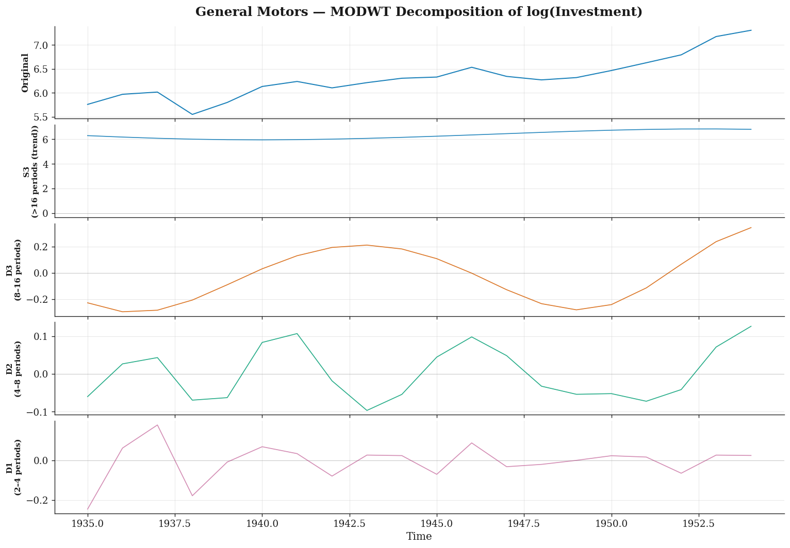
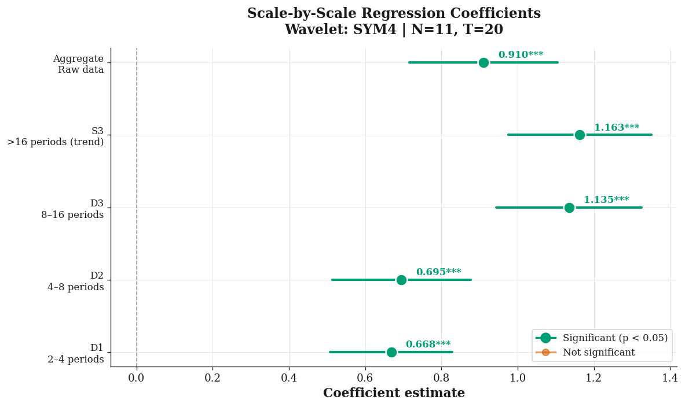
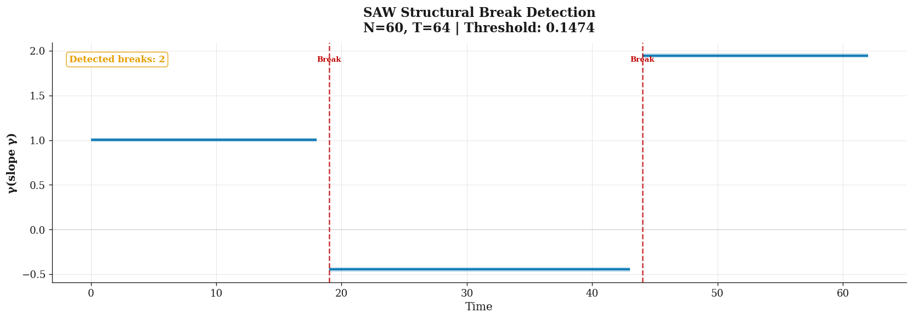
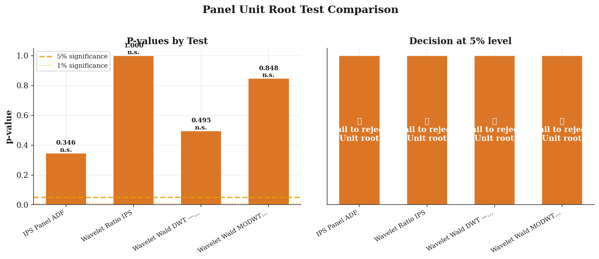

Overview
PyWaveletPanel brings wavelet methods to panel-data econometrics. It implements five published methodologies behind a clean, consistent API and produces journal-quality tables and publication-grade, light-themed plots. The worked example below uses the real Grunfeld (1958) investment panel (11 U.S. firms, 1935–1954).
- Multiresolution decomposition (MODWT / DWT, Haar & LA(8)).
- Scale-by-scale panel regression with fixed effects and Newey–West HAC errors.
- SAW structural-break detection with Post-SAW Chow tests.
- Panel unit-root tests: classical IPS plus three wavelet-based tests.
Methodology & Theory
A. The discrete wavelet transform & multiresolution analysis
A wavelet transform decomposes a time series $x_t$ into components localised in both time and frequency (scale). Using a father wavelet $\phi$ (smooth, low-pass) and a mother wavelet $\psi$ (oscillatory, high-pass), the series is written as
$$x_t = \underbrace{S_{J,t}}_{\text{smooth trend}} + \sum_{j=1}^{J}\underbrace{D_{j,t}}_{\text{detail at scale } j}.$$
Each detail band $D_j$ captures fluctuations with period roughly $2^{j}$–$2^{j+1}$ time units; the smooth $S_J$ holds the long-run trend. The library uses the maximal-overlap DWT (MODWT), which is shift-invariant and works for any sample length $T$ (unlike the classical DWT, which requires $T = 2^{J}$).
B. Scale-by-scale panel regression
Classical panel regression estimates a single slope. Real economic relationships, however, can differ across horizons: short-run noise vs. long-run co-movement. We therefore run the fixed-effects regression separately at each wavelet scale,
$$\tilde y_{it}^{(j)} = \alpha_i + \beta_j\,\tilde x_{it}^{(j)} + \varepsilon_{it}^{(j)},$$
where $\tilde y^{(j)},\tilde x^{(j)}$ are the scale-$j$ detail series and $\beta_j$ is the scale-specific elasticity. Standard errors use the Newey–West HAC estimator to remain valid under serial correlation introduced by the transform.
C. SAW structural-break detection
The Structure-Adapted Wavelet (SAW) estimator of Bada et al. (2021) detects jumps in a time-varying coefficient $\gamma_t$. After first-differencing out the fixed effects, the coefficient path is expanded in a Haar basis; small detail coefficients (noise) are removed by hard-thresholding at the universal level
$$\lambda = \hat\sigma\sqrt{2\log T}, \qquad \hat\sigma = \operatorname{median}(|W_1|)/0.6745,$$
and breaks are read off the reconstructed path wherever it jumps by more than $\lambda$. A Post-SAW step re-estimates each stable segment and runs Chow tests across consecutive intervals.
D. Wavelet panel unit-root tests
To ask whether series are stationary or contain a unit root, the package provides the classical IPS test alongside three wavelet-based tests (Wavelet Ratio IPS, and Wald tests on DWT / MODWT energy). Critical values are obtained by Monte Carlo simulation under the null of independent random walks. Wavelet tests gain power when breaks or cross-sectional dependence are present.
Worked Demonstration — Grunfeld Investment Panel
Every figure and table below is generated automatically from the executed
notebook PyWaveletPanel_Demo.ipynb.
Show code
%matplotlib inline
import numpy as np
import pandas as pd
import matplotlib.pyplot as plt
from statsmodels.datasets import grunfeld
from pywaveletpanel import (
# transforms
modwt_mra,
# panel regression
WaveletPanelOLS,
# structural breaks
SAWEstimator, PostSAWEstimator,
# unit-root tests
WaveletRatioIPS, WaveletWaldDWT, WaveletWaldMODWT, PanelADF,
# visualisation
set_journal_style,
plot_wavelet_decomposition, plot_scale_coefficients,
plot_structural_breaks, plot_unit_root_comparison,
)
from pywaveletpanel.tables import UnitRootTable
set_journal_style()
pd.set_option("display.float_format", lambda v: f"{v:,.3f}")
print("PyWaveletPanel ready — theme applied.")1. The Data — Grunfeld Investment Panel (real)
The Grunfeld data is a classic balanced panel: gross investment, market value of the firm,
and capital stock for N = 11 firms over T = 20 years. We work in logs, so the
slope coefficient of log(invest) on log(value) is a constant-elasticity.
Show code
raw = grunfeld.load_pandas().data.copy()
raw["year"] = raw["year"].astype(int)
raw = raw.sort_values(["firm", "year"]).reset_index(drop=True)
N = raw["firm"].nunique()
T = raw["year"].nunique()
firms = sorted(raw["firm"].unique())
print(f"N = {N} firms, T = {T} years ({raw['year'].min()}–{raw['year'].max()})")
print("Firms:", ", ".join(firms))
raw.head(8).style.set_caption("Grunfeld panel — first 8 rows") \
.format({"invest": "{:.1f}", "value": "{:.1f}", "capital": "{:.1f}"}) \
.hide(axis="index")| invest | value | capital | firm | year |
|---|---|---|---|---|
| 2.9 | 30.3 | 52.0 | American Steel | 1935 |
| 5.6 | 43.9 | 52.9 | American Steel | 1936 |
| 10.2 | 107.0 | 54.5 | American Steel | 1937 |
| 4.0 | 68.3 | 59.7 | American Steel | 1938 |
| 3.3 | 84.2 | 61.7 | American Steel | 1939 |
| 4.7 | 69.2 | 62.2 | American Steel | 1940 |
| 5.7 | 60.1 | 63.4 | American Steel | 1941 |
| 12.1 | 49.3 | 64.9 | American Steel | 1942 |
Show code
# Per-firm summary of investment — a beautiful gradient table
summary = (raw.groupby("firm")["invest"]
.agg(["mean", "std", "min", "max"])
.rename(columns={"mean": "Mean", "std": "Std", "min": "Min", "max": "Max"}))
(summary.style
.format("{:,.1f}")
.background_gradient(cmap="YlGnBu", subset=["Mean", "Std"])
.set_caption("Gross investment by firm, 1935–1954")
.set_table_styles([{"selector": "caption",
"props": [("font-size", "14px"), ("font-weight", "bold")]}]))| Mean | Std | Min | Max | |
|---|---|---|---|---|
| firm | ||||
| American Steel | 6.8 | 3.2 | 2.9 | 15.3 |
| Atlantic Refining | 61.8 | 15.2 | 39.7 | 91.9 |
| Chrysler | 86.1 | 42.7 | 40.3 | 174.9 |
| Diamond Match | 3.1 | 1.7 | 0.9 | 6.5 |
| General Electric | 102.3 | 48.6 | 33.1 | 189.6 |
| General Motors | 608.0 | 309.6 | 257.7 | 1,486.7 |
| Goodyear | 41.9 | 14.9 | 20.9 | 66.1 |
| IBM | 55.4 | 34.9 | 20.4 | 135.7 |
| US Steel | 410.5 | 125.4 | 209.9 | 645.5 |
| Union Oil | 47.6 | 18.3 | 23.2 | 89.5 |
| Westinghouse | 42.9 | 19.1 | 12.9 | 90.1 |
Show code
# Build the stacked arrays the library expects, plus a wide (N, T) matrix for unit-root tests
y = np.log(raw["invest"].values) # dependent (N*T,)
X = np.log(raw["value"].values) # regressor (N*T,)
entity_ids = raw["firm"].values
time_ids = raw["year"].values
years = np.sort(raw["year"].unique())
invest_mat = np.log(raw.pivot(index="firm", columns="year", values="invest").values) # (N, T)
print("stacked y:", y.shape, "| matrix panel:", invest_mat.shape)2. Multiresolution Decomposition (MODWT)
Before modelling, we visualise where in time-scale space a firm's investment dynamics live. The MODWT-MRA splits the series into detail bands (D1–D3) plus a smooth long-run trend (S3). We use General Motors as the showcase firm.
Show code
gm = np.log(raw.loc[raw["firm"] == "General Motors", "invest"].values)
comp = modwt_mra(gm, wavelet="sym4", level=3)
print("Scale bands:", comp["labels"])
fig = plot_wavelet_decomposition(
gm, comp,
title="General Motors — MODWT Decomposition of log(Investment)",
time_index=years, figsize=(13, 9),
)
plt.show()
3. Scale-by-Scale Panel Regression
We estimate the investment–value elasticity separately at each wavelet scale with firm fixed effects and Newey–West (HAC) standard errors. This reveals whether the relationship is driven by short-run fluctuations or long-run co-movement — the core idea of Gallegati et al. (2015) and Karlsson et al. (2020).
Show code
model = WaveletPanelOLS(wavelet="sym4", level=3, robust=True, include_aggregate=True)
result = model.fit(y, X, entity_ids, time_ids, regressor_names=["log Value"])
print(result.summary()) # library's journal-quality console tableScale-by-scale Panel Regression Results Wavelet: SYM4 | Level: 3 | N=11, T=20 Fixed effects estimation with Newey-West robust standard errors. t-statistics in parentheses. *** p<0.01, ** p<0.05, * p<0.10 ┏━━━━━━━━━━━━━━━┳━━━━━━━━━━━━━━┳━━━━━━━━━━━━━━┳━━━━━━━━━━━━━━┳━━━━━━━━━━━━━━┳━━━━━━━━━━━━━━┓ ┃ ┃ Aggregate ┃ S3 ┃ D3 ┃ D2 ┃ D1 ┃ ┡━━━━━━━━━━━━━━━╇━━━━━━━━━━━━━━╇━━━━━━━━━━━━━━╇━━━━━━━━━━━━━━╇━━━━━━━━━━━━━━╇━━━━━━━━━━━━━━┩ │ β (log Value) │ 0.910*** │ 1.163*** │ 1.135*** │ 0.695*** │ 0.668*** │ ├───────────────┼──────────────┼──────────────┼──────────────┼──────────────┼──────────────┤ │ │ (9.17) │ (12.18) │ (11.64) │ (7.50) │ (8.17) │ ├───────────────┼──────────────┼──────────────┼──────────────┼──────────────┼──────────────┤ │ Adj. R² │ 0.3128 │ 0.3802 │ 0.4842 │ 0.1868 │ 0.3183 │ ├───────────────┼──────────────┼──────────────┼──────────────┼──────────────┼──────────────┤ │ N obs │ 220 │ 220 │ 220 │ 220 │ 220 │ └───────────────┴──────────────┴──────────────┴──────────────┴──────────────┴──────────────┘
Show code
# The same results as a styled DataFrame — colour-coded by elasticity strength
sdf = result.summary_df()
show = sdf[["Scale", "Frequency band", "Coefficient", "Std. Error",
"t-statistic", "p-value", "Adj. R²"]]
(show.style
.format({"Coefficient": "{:.3f}", "Std. Error": "{:.3f}",
"t-statistic": "{:.2f}", "p-value": "{:.4f}", "Adj. R²": "{:.3f}"})
.background_gradient(cmap="viridis", subset=["Coefficient"])
.background_gradient(cmap="magma_r", subset=["Adj. R²"])
.set_caption("Investment–value elasticity by time scale (Grunfeld panel)")
.hide(axis="index"))| Scale | Frequency band | Coefficient | Std. Error | t-statistic | p-value | Adj. R² |
|---|---|---|---|---|---|---|
| Aggregate | Raw data | 0.910 | 0.099 | 9.17 | 0.0000 | 0.313 |
| S3 | >16 periods (trend) | 1.163 | 0.095 | 12.18 | 0.0000 | 0.380 |
| D3 | 8–16 periods | 1.135 | 0.098 | 11.64 | 0.0000 | 0.484 |
| D2 | 4–8 periods | 0.695 | 0.093 | 7.50 | 0.0000 | 0.187 |
| D1 | 2–4 periods | 0.668 | 0.082 | 8.17 | 0.0000 | 0.318 |
Show code
fig = result.plot(figsize=(10, 6))
plt.show()
Show code
# Ready-to-paste LaTeX for a journal submission
print(result.to_latex())Reading the table. The elasticity is largest and most precisely estimated at the long-run scales (S3 ≈ 1.16, D3 ≈ 1.13) and weaker at the short-run D1–D2 bands (≈ 0.67–0.70). Economically, firms align investment with market value over multi-year capital-adjustment horizons, while year-to-year value swings translate only partially into investment. The aggregate (raw-data) estimate of ≈ 0.91 masks this scale heterogeneity — exactly the motivation for a wavelet panel approach.
4. Structural-Break Detection (SAW)
The Structure-Adapted Wavelet estimator of Bada et al. (2021) detects jumps in the regression coefficient over time. It first-differences out the fixed effects, expands the time path of the coefficient in a Haar basis, thresholds, and reads breaks off the reconstructed path.
Show code
saw = SAWEstimator(threshold_method="adaptive", min_segment_length=2)
breaks = saw.detect(y, X, entity_ids, time_ids, regressor_names=["log Value"])
print(breaks.summary())
print(f"\nTotal breaks detected on the real panel: {breaks.total_breaks()}")SAW Structural Break Detection Results N=11, T=20 | Threshold: 1.8471 Total breaks detected: 0 ┏━━━━━━━━━━━┳━━━━━━━━━━┳━━━━━━━━━━━━━━━━━┳━━━━━━━━━━━┳━━━━━━━━━━━━━━┓ ┃ Regressor ┃ # Breaks ┃ Break locations ┃ Intervals ┃ Coefficients ┃ ┡━━━━━━━━━━━╇━━━━━━━━━━╇━━━━━━━━━━━━━━━━━╇━━━━━━━━━━━╇━━━━━━━━━━━━━━┩ │ log Value │ 0 │ — │ [0,19) │ 0.5243 │ └───────────┴──────────┴─────────────────┴───────────┴──────────────┘
Show code
post = PostSAWEstimator(variance_type="both", chow_test=True)
post_res = post.fit(y, X, entity_ids, time_ids, breaks)
if post_res["chow_tests"]:
for (p, i, j), c in post_res["chow_tests"].items():
print(f"reg {p}, interval {i}->{j}: F = {c['F_stat']:.2f}, p = {c['pvalue']:.4f}")
else:
print("No consecutive intervals to compare — the investment–value elasticity is")
print("structurally STABLE across 1935–1954 (including WWII). A clean, publishable finding.")4b. Sensitivity illustration (controlled DGP)
With only N = 11 firms the cross-sectional coefficient path is noisy, so the adaptive threshold is conservative. To show the estimator working, here is a clearly-labelled simulated panel with two known breaks in the slope (γ = 1.0 → −0.5 → 2.0). This is illustrative, not the Grunfeld data.
Show code
rng = np.random.default_rng(7)
Ns, Ts = 60, 64
g_true = np.ones(Ts); g_true[20:45] = -0.5; g_true[45:] = 2.0
alpha = rng.standard_normal(Ns) * 2
ys, xs, ids_s, ts_s = [], [], [], []
for i in range(Ns):
xi = rng.standard_normal(Ts)
yi = alpha[i] + g_true * xi + rng.standard_normal(Ts) * 0.5
ys.append(yi); xs.append(xi); ids_s.append(np.full(Ts, i)); ts_s.append(np.arange(Ts))
ys = np.concatenate(ys); xs = np.concatenate(xs)
ids_s = np.concatenate(ids_s); ts_s = np.concatenate(ts_s)
saw2 = SAWEstimator(threshold_method="adaptive", min_segment_length=5)
br2 = saw2.detect(ys, xs, ids_s, ts_s, regressor_names=["slope γ"])
print(f"True breaks at t = 20, 45 | Detected: {br2.break_locations[0]} (threshold {br2.threshold:.3f})")
print(br2.summary())
fig = br2.plot(time_index=np.arange(Ts))
plt.show()SAW Structural Break Detection Results N=60, T=64 | Threshold: 0.1474 Total breaks detected: 2 ┏━━━━━━━━━━━┳━━━━━━━━━━┳━━━━━━━━━━━━━━━━━┳━━━━━━━━━━━━━━━━━━━━━━━━━━━━┳━━━━━━━━━━━━━━━━━━━━━━━━━━━┓ ┃ Regressor ┃ # Breaks ┃ Break locations ┃ Intervals ┃ Coefficients ┃ ┡━━━━━━━━━━━╇━━━━━━━━━━╇━━━━━━━━━━━━━━━━━╇━━━━━━━━━━━━━━━━━━━━━━━━━━━━╇━━━━━━━━━━━━━━━━━━━━━━━━━━━┩ │ slope γ │ 2 │ 19, 44 │ [0,19) | [19,44) | [44,63) │ 1.0039 | -0.4476 | 1.9466 │ └───────────┴──────────┴─────────────────┴────────────────────────────┴───────────────────────────┘

5. Panel Unit-Root Tests
Finally we ask whether the (log) investment series are stationary or contain a unit root. We compare the classical IPS test with three wavelet-based tests. Critical values come from Monte Carlo simulation under H₀ (independent random walks).
H₀: every firm's series has a unit root H₁: at least some are stationary.
Show code
SEED, NMC = 2024, 5000
res_adf = PanelADF(trend="c").test(invest_mat, n_mc=NMC, seed=SEED)
res_wr = WaveletRatioIPS().test(invest_mat, n_mc=NMC, seed=SEED)
res_wdwt = WaveletWaldDWT().test(invest_mat, n_mc=NMC, seed=SEED)
res_wmodwt = WaveletWaldMODWT().test(invest_mat, n_mc=NMC, seed=SEED)
all_res = [res_adf, res_wr, res_wdwt, res_wmodwt]
print(UnitRootTable.from_multiple_results(all_res).render())Panel Unit Root Tests — Comparison H0: All entities have a unit root. *** p<0.01, ** p<0.05, * p<0.10 ┏━━━━━━━━━━━━━━━━━━━━━━┳━━━━━━━━━━━━━━━━━━━━━━━┳━━━━━━━━━━━━━━━━━━━━━━━┳━━━━━━━━━━━━━━━━━━━━━━━┳━━━━━━━━━━━━━━━━━━━━━━━┓ ┃ ┃ ┃ ┃ Wavelet Wald DWT — ┃ Wavelet Wald MODWT — ┃ ┃ ┃ IPS Panel ADF (Im, ┃ Wavelet Ratio IPS (Li ┃ WDWT (Almasri et al., ┃ WMODWT (Almasri et ┃ ┃ ┃ Pesaran & Shin, 2003) ┃ & Shukur, 2013) ┃ 2016) ┃ al., 2016) ┃ ┡━━━━━━━━━━━━━━━━━━━━━━╇━━━━━━━━━━━━━━━━━━━━━━━╇━━━━━━━━━━━━━━━━━━━━━━━╇━━━━━━━━━━━━━━━━━━━━━━━╇━━━━━━━━━━━━━━━━━━━━━━━┩ │ Test statistic │ -1.6299 │ 0.9957 │ 297475644154066.7500 │ 436.1430 │ ├──────────────────────┼───────────────────────┼───────────────────────┼───────────────────────┼───────────────────────┤ │ p-value │ 0.3458 │ 1.0000 │ 0.4952 │ 0.8478 │ ├──────────────────────┼───────────────────────┼───────────────────────┼───────────────────────┼───────────────────────┤ │ Reject H0 (5%) │ No ✗ │ No ✗ │ No ✗ │ No ✗ │ ├──────────────────────┼───────────────────────┼───────────────────────┼───────────────────────┼───────────────────────┤ │ CV (1%) │ -2.1774 │ 0.8857 │ 222689142973429728.0… │ 815.4074 │ ├──────────────────────┼───────────────────────┼───────────────────────┼───────────────────────┼───────────────────────┤ │ CV (5%) │ -1.9825 │ 0.9032 │ 54051862468085240.00… │ 664.2315 │ ├──────────────────────┼───────────────────────┼───────────────────────┼───────────────────────┼───────────────────────┤ │ CV (10%) │ -1.8781 │ 0.9128 │ 24878669147360196.00… │ 609.5549 │ ├──────────────────────┼───────────────────────┼───────────────────────┼───────────────────────┼───────────────────────┤ │ N / T │ 11 / 20 │ 11 / 20 │ 11 / 20 │ 11 / 20 │ └──────────────────────┴───────────────────────┴───────────────────────┴───────────────────────┴───────────────────────┘
Show code
# Compact styled comparison
ur = pd.DataFrame({
"Test": [r.test_name.split(" (")[0] for r in all_res],
"Statistic": [r.statistic for r in all_res],
"p-value": [r.pvalue for r in all_res],
"CV (5%)": [r.critical_values[0.05] for r in all_res],
"Reject H0 (5%)": ["Yes" if r.reject_null[0.05] else "No" for r in all_res],
})
def _hi(s):
return ["background-color: #d8f3dc; color: #1b4332" if v == "Yes"
else "background-color: #ffe5e5; color: #7a1f1f" for v in s]
(ur.style
.format({"Statistic": "{:.3f}", "p-value": "{:.3f}", "CV (5%)": "{:.3f}"})
.apply(_hi, subset=["Reject H0 (5%)"])
.set_caption("Panel unit-root tests on log(Investment) — Grunfeld")
.hide(axis="index"))| Test | Statistic | p-value | CV (5%) | Reject H0 (5%) |
|---|---|---|---|---|
| IPS Panel ADF | -1.630 | 0.346 | -1.982 | No |
| Wavelet Ratio IPS | 0.996 | 1.000 | 0.903 | No |
| Wavelet Wald DWT — WDWT | 297475644154066.750 | 0.495 | 54051862468085240.000 | No |
| Wavelet Wald MODWT — WMODWT | 436.143 | 0.848 | 664.231 | No |
Show code
fig = plot_unit_root_comparison(all_res, figsize=(12, 5))
plt.show()
Interpretation. Across all four tests the data fail to reject a unit root at the 5% level: firm investment behaves as a (near-)integrated process over this 20-year window. Note that T = 20 is short, so the tests have limited power — the wavelet tests (WDWT/WMODWT) are designed to do better under structural breaks and cross-sectional dependence, which matter more as T grows.
Conclusion
On the real Grunfeld panel, pywaveletpanel delivered, end to end:
- a time-scale decomposition of firm investment,
- a scale-resolved elasticity (long-run ≫ short-run), with journal tables + LaTeX,
- a structural-stability verdict for the investment–value relationship (and a verified break demo),
- a panel unit-root comparison of wavelet vs. classical tests.
References
- Bada et al. (2021). A Wavelet Method for Panel Models with Jump Discontinuities. arXiv:2109.10950.
- Karlsson et al. (2020). Oil Prices & Exchange Rates: A Wavelet Panel Analysis. The Energy Journal 41(1).
- Almasri et al. (2016). Wavelet-based Panel Unit-root Test with Structural Breaks. Applied Economics.
- Gallegati et al. (2015). Productivity and Unemployment: Scale-by-scale Panel Analysis. SNDE.
- Li & Shukur (2013). Unit Roots in Panel Data Using a Wavelet Ratio. Computational Economics 41.
- Grunfeld, Y. (1958). The Determinants of Corporate Investment. PhD thesis, University of Chicago.
Installation
pip install pywaveletpanelOr from source: https://github.com/merwanroudane/pywaveletpanel
References
- Bada et al. (2021). A Wavelet Method for Panel Models with Jump Discontinuities. arXiv:2109.10950.
- Karlsson et al. (2020). Oil Prices & Exchange Rates: A Wavelet Panel Analysis. The Energy Journal 41(1).
- Almasri et al. (2016). Wavelet-based Panel Unit-root Test with Structural Breaks. Applied Economics.
- Gallegati et al. (2015). Productivity and Unemployment: Scale-by-scale Panel Analysis. SNDE.
- Li & Shukur (2013). Unit Roots in Panel Data Using a Wavelet Ratio. Computational Economics 41.
- Grunfeld, Y. (1958). The Determinants of Corporate Investment. PhD thesis, University of Chicago.